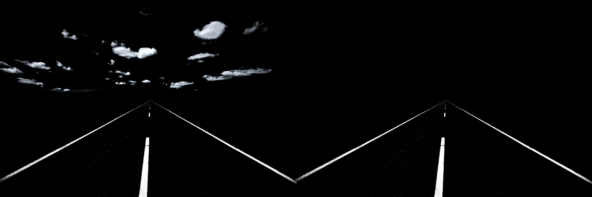
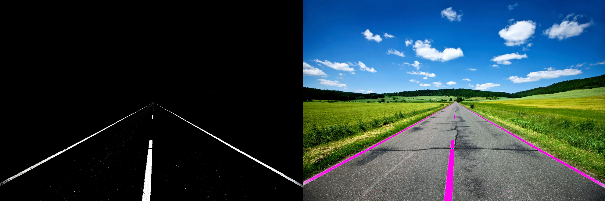
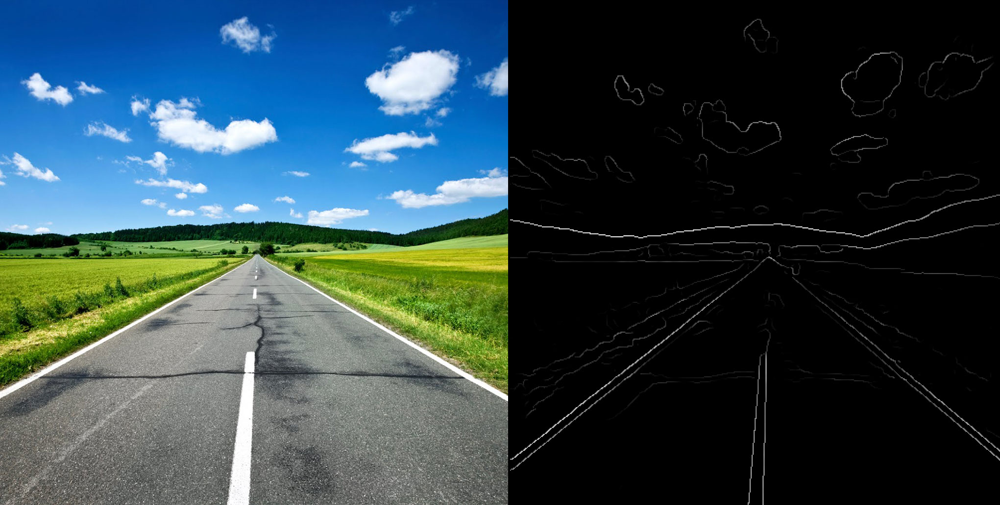
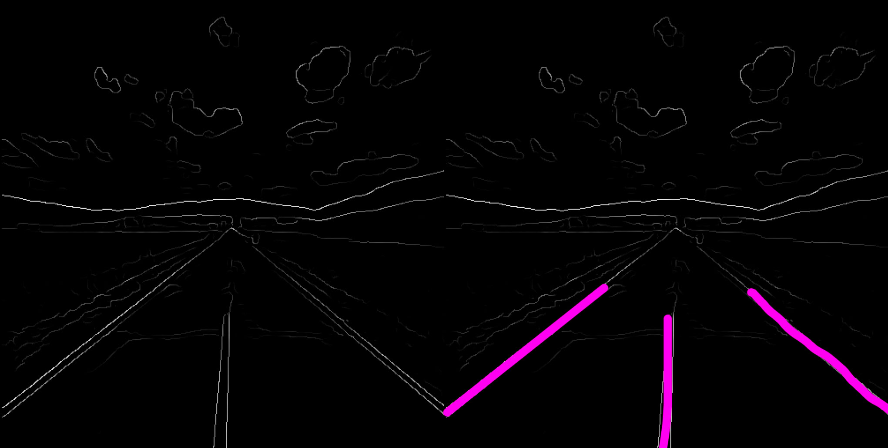

Lane Detection
Objectives
My objective was to develop a lane detection algorithm. There are a number of different ways to detect lanes using information from a camera. Below are two methods of lane detection that I developed for the McMaster Engineering EcoCar 3 ADAS system.
Basic Lane Detection
Filter colours from the image to give prominence to road-lines in the image. The majority of road-lines are white and yellow, allowing their colours (and shape) to be extracted from the image.
Select a region of interest, anything outside of this region of interest can be ignored. Regions of interest improve the efficiency of computer vision algorithms by reducing the amount of data you need to process.

Extract the remaining image elements, and place annotated marking data over the original image. At this point, the lanes have been detected.

This method of extracting lanes from colour data is effective, however lanes are not always the same colour. In the real world, lanes are often both yellow and white. Thus this method of detecting lanes using solely colour is not very reliable.
Better Lane Detection
A better method of lane detection involves using Computer Vision algorithms to extract, and detect edges that describe shapes within an image. Specifically, I used what's known as 'Canny Edge Detection' to analyze changes in brightness throughout an image, and extract edge features based on this information. With edge detection, large variation in brightness between neighboring pixels corresponds to an edge, which in the case of automated driving, is often a lane marking.
After the edges have been found in the image, apply the Hough transform within a region of interest to detect lines.
In the end, the use of common computer vision algorithms to extract and detect lane markings is significantly more successful than using other colour-based filtering method.This method (or something similar) is most likely what will end up in the final production of ADAS software.